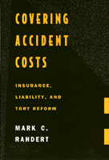

The debate over the structure of tort law and victim compensation
The debate over the structure of tort law and victim compensation


 The debate over the structure of tort law and victim compensation
The debate over the structure of tort law and victim compensation

|  |
Covering Accident CostsInsurance, Liability, and Tort ReformsMark C. Rahdertpaper EAN: 978-1-56639-233-4 (ISBN: 1-56639-233-0) |
"Covering Accident Costs is a clear, straightforward, and insightful study of the workings and interrelations of tort law and insurance. Its balanced presentation avoids jargon and is accessible to any interested reader."
—Jerry Phillips, University of Tennessee
Over the past century, tort law and insurance have developed deeply intertwined legal and economic roots. Insurance usually determines whether tort cases are brought to trial, whom plaintiffs sue, how much they claim, who provides the defense, how the case gets litigated, the dynamics of the settlement, and how much plaintiffs ultimately recover. But to what extent should liability rules be influenced by insurance? In this study, Mark Rahdert identifies the leading arguments both in favor of and against what he terms the "insurance rationale"—the idea that tort law should be structured to facilitate victim access to assured compensation.
The insurance rationale has been a leading force in the development of product liability law and, as a component of accident compensation, has significantly influenced pro-plaintiff advances in principal areas of tort law. However, the insurance rationale is also the source of great controversy. Critics charge that liability rules deliberately set to maximize plaintiffs' access to insurance funds have corrupted the system, causing insurance costs to spiral upward uncontrollably. Considering the strengths and weaknesses of both sides of the current debate, Rahdert develops a modified version of the insurance rationale that can become a tool for evaluating future tort reform proposals.
Introduction
Part I: The Insurance Rationale for Tort Liability in Legal Theory
1. The Early History of the Insurance Rationale
2. Emergence of a General Insurance Rationale: The Triumph of Legal Realism
3. The Insurance Rationale Decried: The Theoretical Underpinnings of the Current Movement for Tort Reform
4. The Role of Insurance in Tort Liability: Some Preliminary Lessons from Scholarship
Part II: The Insurance Rationale for Tort Liability in Practice
5. Judicial and Legislative Approaches to the Insurance Rationale
6. Some Prominent Examples of the Insurance Rationale in Practice
7. Summary of Principal Themes
Part III: The Insurance Rationale, the Liability Insurance Crisis, and the Future of Tort Reform
8. The Insurance Rationale and the Late Liability Insurance Crisis
9. The Insurance Rationale Reconsidered
10. The Insurance Rationale and the Future of Tort Reform
Notes
Index
 | Mark C. Rahdert is Professor of Law at Temple University. |
© 2015 Temple University. All Rights Reserved. This page: http://www.temple.edu/tempress/titles/1001_reg.html.